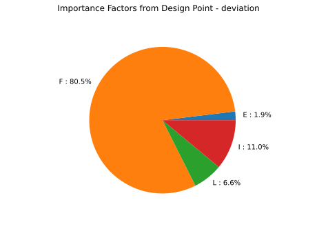
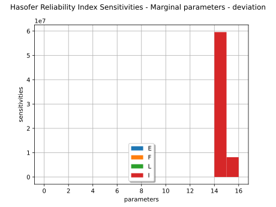
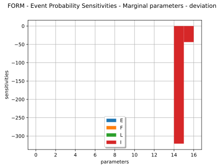
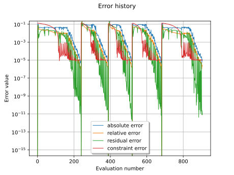

Note
Go to the end to download the full example code.
Use the FORM - SORM algorithms¶
In this example we estimate a failure probability with the FORM algorithm on the cantilever beam example. More precisely, we show how to use the associated results:
the design point in both physical and standard space,
the probability estimation according to the FORM approximation, and the following SORM ones: Tvedt, Hohenbichler and Breitung,
the Hasofer reliability index and the generalized ones evaluated from the Breitung, Tvedt and Hohenbichler approximations,
the importance factors defined as the normalized director factors of the design point in the
![U]() -space
-spacethe sensitivity factors of the Hasofer reliability index and the FORM probability,
the coordinates of the mean point in the standard event space.
See FORM and SORM for theoretical details.
Model definition¶
from openturns.usecases import cantilever_beam
import openturns as ot
import openturns.viewer as otv
We load the model from the usecases module :
We use the input parameters distribution from the data class :
distribution = cb.distribution
distribution.setDescription(["E", "F", "L", "I"])
We define the model
Create the event whose probability we want to estimate.
vect = ot.RandomVector(distribution)
G = ot.CompositeRandomVector(model, vect)
event = ot.ThresholdEvent(G, ot.Greater(), 0.3)
event.setName("deviation")
FORM Analysis¶
Define a solver, here we use a MultiStart optimization based on Cobyla
startingSample = distribution.getSample(10)
optimAlgo = ot.MultiStart(ot.Cobyla(), startingSample)
optimAlgo.setMaximumCallsNumber(1000)
optimAlgo.setMaximumAbsoluteError(1.0e-4)
optimAlgo.setMaximumRelativeError(1.0e-4)
optimAlgo.setMaximumResidualError(1.0e-4)
optimAlgo.setMaximumConstraintError(1.0e-4)
Run FORM
Analysis of the results¶
Probability
1.0916738855998618e-06
Hasofer reliability index
4.735667979650638
Design point in the standard U* space.
print(result.getStandardSpaceDesignPoint())
[-0.665437,4.31238,1.23009,-1.36895]
Design point in the physical X space.
print(result.getPhysicalSpaceDesignPoint())
[6.56568e+10,458.964,2.58907,1.34803e-07]
Importance factors

marginalSensitivity, otherSensitivity = result.drawHasoferReliabilityIndexSensitivity()
marginalSensitivity.setLegends(["E", "F", "L", "I"])
marginalSensitivity.setLegendPosition("bottom")
view = otv.View(marginalSensitivity)

marginalSensitivity, otherSensitivity = result.drawEventProbabilitySensitivity()
marginalSensitivity.setLegends(["E", "F", "L", "I"])
marginalSensitivity.setLegendPosition("bottom")
view = otv.View(marginalSensitivity)

Error history

Get additional results with SORM
algo = ot.SORM(optimAlgo, event)
algo.run()
sorm_result = algo.getResult()
Reliability index with Breitung approximation
4.91472003660979
… with Hohenbichler approximation
4.920096521392508
4.923410319701776
SORM probability of the event with Breitung approximation
4.4454709547598507e-07
… with Hohenbichler approximation
4.3250771927588216e-07
… with Tvedt approximation
4.2524430981447165e-07
FORM analysis with finite difference gradient¶
When the considered function has no analytical expression, the gradient may not be known. In this case, a constant step finite difference gradient definition may be used.
def cantilever_beam_python(X):
E, F, L, II = X
return [F * L**3 / (3 * E * II)]
cbPythonFunction = ot.PythonFunction(4, 1, func=cantilever_beam_python)
epsilon = [1e-8] * 4 # Here, a constant step of 1e-8 is used for every dimension
gradStep = ot.ConstantStep(epsilon)
cbPythonFunction.setGradient(
ot.CenteredFiniteDifferenceGradient(gradStep, cbPythonFunction.getEvaluation())
)
G = ot.CompositeRandomVector(cbPythonFunction, vect)
event = ot.ThresholdEvent(G, ot.Greater(), 0.3)
event.setName("deviation")
However, given the different nature of the model variables, a blended (variable) finite difference step may be preferable: The step depends on the location in the input space
gradStep = ot.BlendedStep(epsilon)
cbPythonFunction.setGradient(
ot.CenteredFiniteDifferenceGradient(gradStep, cbPythonFunction.getEvaluation())
)
G = ot.CompositeRandomVector(cbPythonFunction, vect)
event = ot.ThresholdEvent(G, ot.Greater(), 0.3)
event.setName("deviation")
We can then run the FORM analysis in the same way as before: